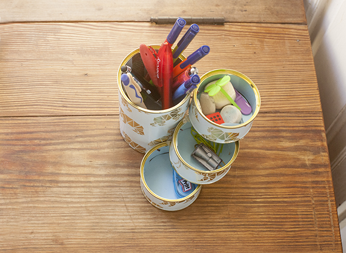

Hannah hat sich einen Stiftehalter gebastelt. Erst säubert man eine Tomatendose und 3 Tunfischdosen. In das Innere klebt man mit Klebestreifen farbiges Papier und als Boden schneidet man einen Kreis aus. Außen um die Dose hat Hannah Geschenkpapier geklebt. Die kleinen Dosen halten durch einen kleinen Draht, dein sie durch ein kleines Loch gesteckt hat. Damit sie nicht verrutschen sind die kleinen Dosen untereinander verklebt.
Hannah se ha hecho un lapicero. Sólo hace falta una lata de tomate y 3 latas de atún limpias. En el interior se pega con una tira adhesiva papel de colore y como fondo un círculo. En el exterior de la lata se pega papel de regalo. Las pequeñas latas se sostienen por un pequeño cable que pasa por agujeros. Para que no se mueven están pegadas entre ellas.
Hannah has made a penholder. You need one clean tomato can and 3 clean tuna cans. In the inside stick with adhesive strip colored paper and in the bottom circles. The outside the can you can glue present paper. The small cans are hold by a small wire through holes. The bottoms of the small cans are glued so they don´t move.